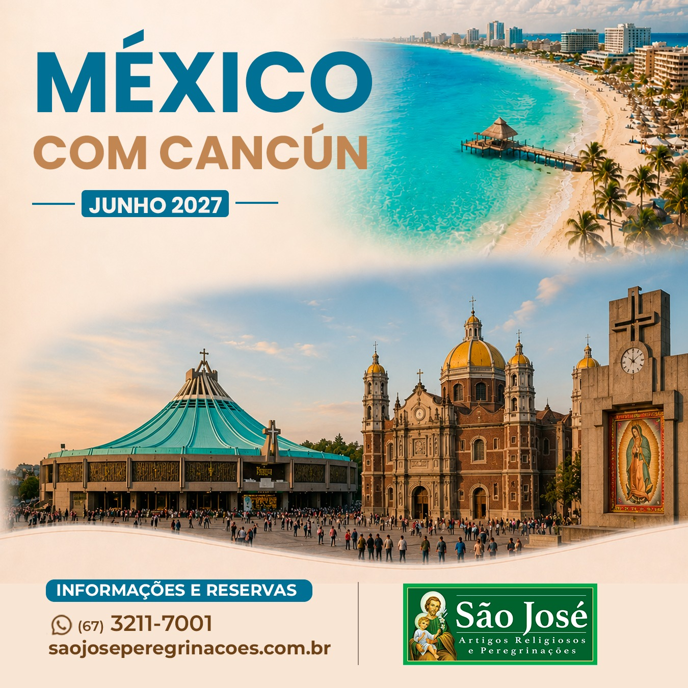

Embarque em Garulhos com destino ao México.
Chegada, recepção no aeroporto da Cidade do México e visita panorâmica nas principais avenidas, seus mais destacados monumentos, Praça da Constituição (zocalogo. Traslado ao hotel. Hospedagem. Jantar e pernoite.
Após o café da manhã, dia de aprofundamento espiritual no Santuário de Guadalupe com celebração da Santa Missa. Hospedagem, Jantar e pernoite.
Após o café da manhã, saída para zona arqueológica de Teotihucan, onde conheceremos as pirâmides do sol e da lua, a rua dos mortos e o templo de quetzalcoatl. Tarde: visita ao Palácio de Belas Artes. Retorno ao hotel, acomodação. Jantar e pernoite.
Após o café da manhã, saída para Cuernavaca, conhecida como lugar da eterna primavera. Visita a mais antiga catedral do México. Continuação pelos sinuosos caminhos através da Serra Madre, cortada por vales e bosques. Visita a Igreja de Santa Prisca, construída com a prata da cidade.
Em horário programado, traslado ao aeroporto da Cidade do México. Embarque para Cancun. Chegada, recepção e traslado ao hotel. Jantar e pernoite.
Hospedagem em resort all inclusive.
Hospedagem em resort all inclusive.
Hospedagem em resort all inclusive.
E horário apropriado, embarque de retorno para o Brasil.
Chegada em Guarulhos.